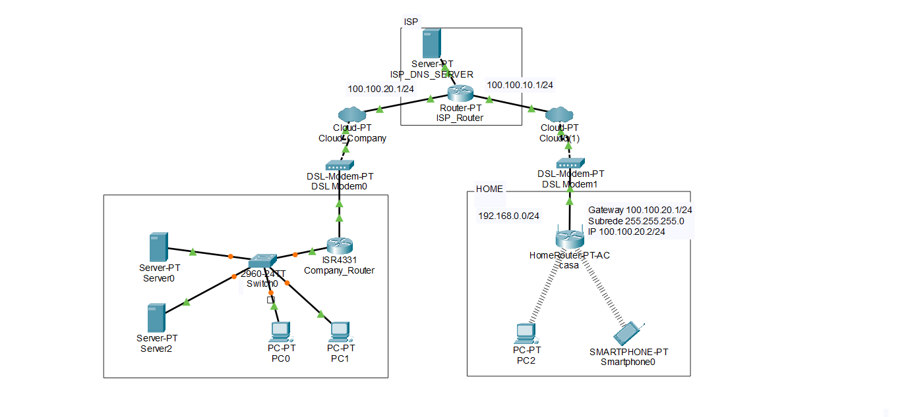
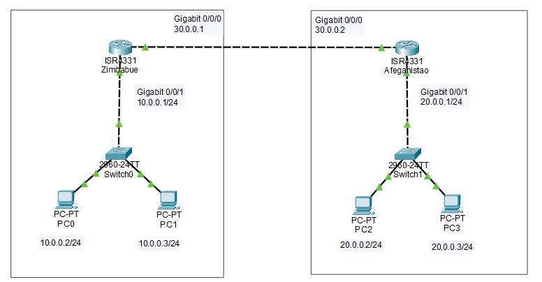
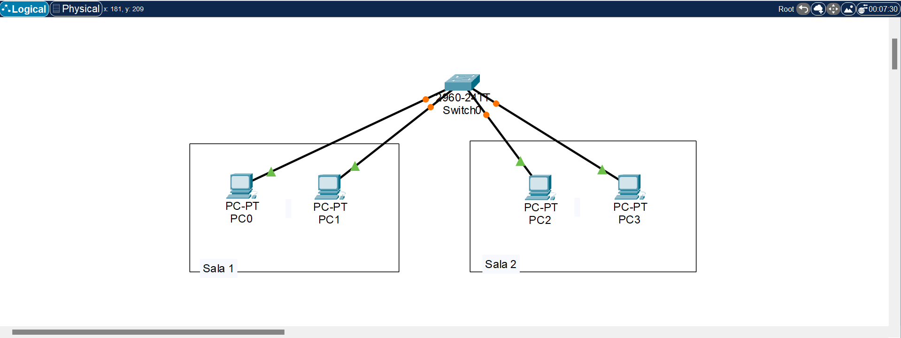

No estudo das redes, iniciamos o módulo explorando as definições de PAN, CAN, LAN e WAN. Também nos familiarizamos com os diversos tipos de topologia, tanto física - envolvendo cabos e computadores - quanto lógica, relacionada à circulação dos dados.
Prosseguindo com o tema da topologia, examinamos as características e aplicações dos endereços MAC (Media Access Control), responsáveis pela identificação e envio de pacotes, assim como o LLC (Logical Link Control), que gerencia o fluxo de dados. Além disso, aprendemos sobre o controle de erros com a Frame Check Sequence (FCS) e a verificação de redundância cíclica (CRC). No que diz respeito aos modelos de padronização, estudamos o modelo OSI (com suas sete camadas: aplicação, apresentação, sessão, transporte, rede, enlace e física) e o TCP/IP, que classifica essas camadas em grupos específicos, como aplicação, transporte, internet e acesso à rede.
Também nos familiarizamos com diferentes protocolos nessas camadas, como HTTP, HTTPS, ICMP, FTP, FTPS, UDP/TCP, IPv4 e IPv6, além do aspecto físico relacionado ao endereço MAC. No contexto das redes, também aprendemos sobre as metodologias de comunicação PDU (Protocol Data Unit) unicast, broadcast e multicast, que explicam as formas de transmissão de dados entre canais. Realizamos vários exercícios para determinar os IPs disponíveis em uma ou mais redes, além dos endereços de rede e broadcast padrão. Além disso, abordamos o padrão IEEE, sua origem, destino, meios de transmissão e regras de comunicação. Exploramos também conceitos como zona desmilitarizada (DMZ), VPN (rede virtual privada criptografada), DNS (Domain Name System - Sistema de Nomes de Domínio), SSH (Secure Shell), DHCP (Dynamic Host Configuration Protocol - Protocolo de Configuração Dinâmica de Host) e NAT (Network Address Translation - Tradução de Endereço de Rede).
Por fim, fomos divididos em grupos para apresentar os temas abordados durante as aulas. Os tópicos incluíam: História da Internet, Governança e Estrutura, Regulamentação de Redes, RFCs da IETF (Internet Engineering Task Force - Força-Tarefa de Engenharia da Internet), Governança de IPv4 e IPv6, e os protocolos TCP, UDP, SCTP e DCTP.
Projetos desenvolvidos:
Através da plataforma Cisco Packet Tracer, realizamos alguns testes virtuais que normalmente só seriam possíveis fisicamente.
O primeiro deles foi um projeto que simula a interação de uma rede local empresarial com servidores e um roteador residencial.

Já o segundo no segundo, desenvolvemos um projeto que simula a comunicação entre WANs.

No terceiro e último, simulaMmos a comunicação de PDUs entre dois computadores por via de um Switch.
